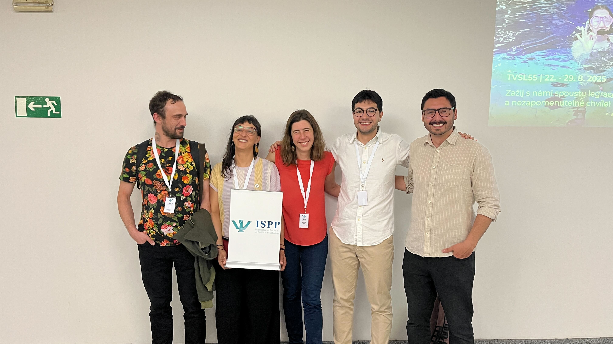

Entre el 3 y el 6 de julio, integrantes del Observatorio Latinoamericano de Estudios Sociales (OLES) participaron activamente en el Congreso Anual de la International Society of Political Psychology (ISPP), realizado en Praga, República Checa. Este encuentro reúne cada año a investigadores de todo el mundo para reflexionar en torno a los procesos psicológicos que influyen en la política y la sociedad. Contribuciones destacadas
Durante el evento, los equipos de investigación de OLES presentaron los siguientes estudios:
Matías Deneken: Analizó la evolución de la legitimidad de la violencia en el contexto del conflicto entre el Estado chileno y el pueblo mapuche, abarcando el periodo 2016–2023.
Ana Figueiredo: Estudió cómo las ideologías poscoloniales influyen en el respaldo a medidas contra la represión hacia el pueblo mapuche.
Joaquín Bahamondes, Monica Gerber, Luciano Sáez, Manuel Cárdenas, Ana Figueiredo y Macarena Orchard: Examinaron las motivaciones ideológicas que llevan a justificar o rechazar las violaciones a los derechos humanos en Chile.
Monica Gerber, Ana Figueiredo, Luciano Sáez y Macarena Orchard: Investigaron el papel de la justicia procesal y la legitimidad policial en el apoyo o rechazo a la violencia en el marco de las protestas sociales.
Estos trabajos contribuyen a comprender cómo las nociones de justicia, poder y memoria colectiva configuran la relación entre la ciudadanía y el Estado, especialmente en contextos marcados por la conflictividad política y social.
La participación en ISPP 2025 reafirma el compromiso de OLES con la investigación rigurosa y el debate académico sobre los derechos humanos, la democracia y las tensiones que atraviesan nuestras sociedades. Nos enorgullece seguir contribuyendo al desarrollo de la Psicología Política.
